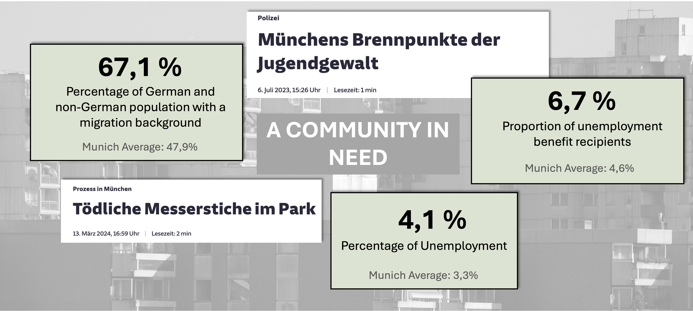

Intro Team NewP Solutions is a dynamic group of innovators dedicated to tackling urban challenges through collaborative problem-solving and innovative solutions. Our mission is to create positive impact in urban environments by addressing pressing issues and implementing sustainable strategies.
Our home page serves as a central hub, featuring our Team Canvas, which outlines our collective vision, values, and objectives. This canvas encapsulates our team's essence and provides a roadmap for our journey ahead.
Join us on our quest to transform urban landscapes and make a lasting difference in the world. Together, we can pave the way towards a brighter, more sustainable future.
The Problem Neuperlach is facing a problem. With one of the highest influxes of new residents with completely different cultural backgrounds and not a lot of disposable income, it is hard for new people to integrate into a community.
The government officials are also noticing this and therefore are considering Neuperlach a "Handlungsraum". With this they identified the area as a highly dynamic city part and in need of action. Another problem they found in their analysis is that local social initiatives like ZAK or NEBhourhoods are facing reduces user numbers.
After investigating and trying to find a reason for this, we identified their communication as the main reason for their lack of reach. In an increasingly digital world where a lot of people rely on social media to find hobbies and activities, the lack of content on the platforms of these initiatives means they are not being exposed to their target groups. In order to help them we need to provide them with a platform that is easily accessible and low barrier of access.

Our Solution To address this problem, we are implementing an outdoor digital screen that serves as a digital information board within the park. This screen will provide real-time updates on park events, activities, and projects in the area. Additionally, we will utilise QR-codes to quickly allow signing up for these events as well as link to resources allowing to potentially organize your own. Using the proven concept of the "Fahrgastfernsehen", as seen in Munich underground trains, we can rely on our own funding and sustain our activities by getting profits with selling ad space on our screen.

Why is this the right Product? Our solution is designed to bridge the information gap, ensuring that all citizens, regardless of socioeconomic status, have easy low-barrier access to relevant information about the park. By enhancing community engagement, promoting inclusivity, and increasing the park's utilization, our project aims to create a vibrant, dynamic, and well-connected community space. This comprehensive approach not only benefits the local residents but also supports local businesses, community organizations, and tourists, making it a sustainable and impactful initiative.